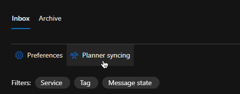
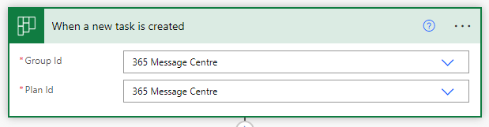
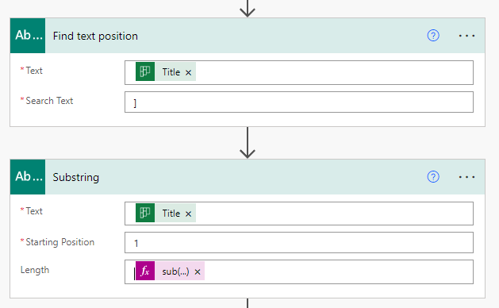
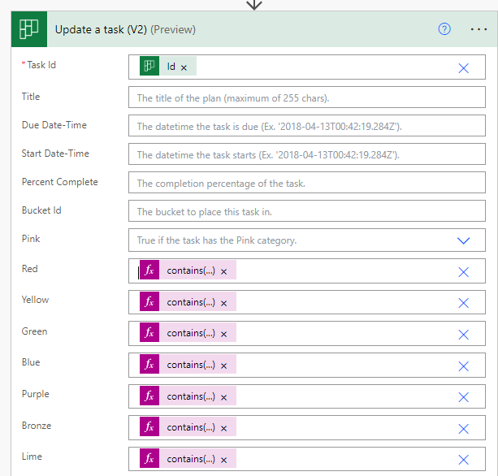

Syncing Message Centre to Planner & Auto Tag
Setting up sync and Group
Syncing Message Centre messages to planner is a good way to get an overview in your org of what changes are coming from Microsoft in the near future and prepare to act upon them.
Luckily for us Microsoft have build this feature right into the O365 Message Centre, clicking the Planner Sync button will automatically create a Power Automate flow for us.

The Planner that can be attached to a Team or Office 365 group. In my case I will create a dynamic O365 group with a dynamic membership rule to pick up users from other groups, this way management of this group will happen automatically based on the other teams.
The rule syntax is shown below and we can add up to 50 groups this way.
1
user.memberOf -any (group.objectId -in ['GROUP-GUID','GROUP-GUID','GROUP-GUID'])
Once we have our group setup the MS Planner can attach to this and membership will be governed by the group(s) from the rule.
Creating a Sharepoint List
For the auto tagging in our use case we will create a Sharepoint List in the Office 365 group with the following structure
| Title | Team |
|---|---|
| Teams | Team 1 |
| Stream | Team 2 |
| Sharepoint | Team 3 |
This will be used by our auto tagging flow to map the services to our Teams
Auto Tagging via Power Automate flow
We should now have messages populating into our Planner, from here we want to check what Microsoft service the message is for and tag it with the appropriate coloured tag.
- We will start with a
When a new task is createdtrigger and select our group and plan.
 - Next we will initialize a blank array called ‘teams’
- To get the MS service in the message we will use a
Find text positionand the search text of] - Followed by a
Substringthat takes the output from our previous action, has a start position of ‘1’ and for the length we will use the following expressionNote: The name of your text position step is used in the expression so if you have renamed it you will need to update it in the expression
1
sub(outputs('Find_text_position')?['body'],1)
- Some messages have multiple services so we will use a
Composeaction with the following expression to split the results on a comma1
split(outputs('Substring')?['body'],', ') - Next we will use a
Get Itemsand get our sharepoint list we made earlier. - Following this we will crete an
Apply to Each loopwhere the input is the output of our compose action - Inside the loop we will create a second
Apply to Eachthis time the input will be the output from our SharepointGet Items. - Inside the 2nd loop we will add a
Conditionto check if the ‘Name’ of our Sharepoint item matches the ‘Current item’ from the first loop Under the
If Yessection we will add anAppend to Arrayand add the Team from our sharepoint list to the array we made at the start.- Finally we are going to use the
Update a Task (V2)to update task with tagsFor this example let’s assume Team 1 is blue, Team 2 is red and Team 3 is green
For the Task ID we will use the ID from the trigger action and leave the rest default until we get to the tags.
For each tag we will use it’s own expression this expression will check the array for a specific team name nad if found apply that tag, this way we can apply multiple tags if we need multiple teams assigned.For the blue tag we will use the expression
1
contains(variables('teams'),'Team 1')For red the expression will be
1
contains(variables('teams'),'Team 2')and for green it’s
1
contains(variables('teams'),'Team 3')